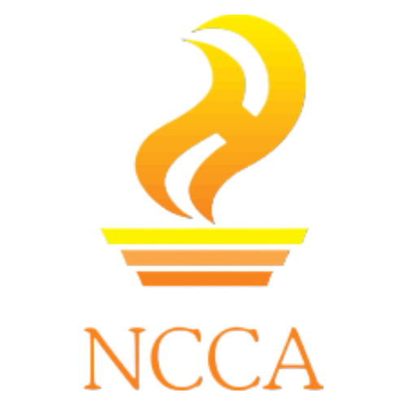

Daily Accomplishments
WEEK 1: January 27–31, 2025
January 27, 2025
- Started the day by joining the morning assembly with Ma’am Delia, our supervisor.
- Took a building tour and attended an orientation inside the library.
- Worked on creating an Audio Visual Presentation for the Event Month, based on the NCCA’s calendar of events.
January 28, 2025
- Spent time auditing book materials.
- Shelved the books we finished auditing.
- Accessioned and encoded several books.
- Stamped a total of 50 encoded books.
- Prepared and encoded call numbers and titles for library cards and due loan slips.
- Processed 10 Terminal Reports.
- Handled 10 NCCA published books.
January 30, 2025
- Cataloged and encoded bibliographic records for books and CDs (15 books and 5 CDs).
- Stamped and arranged newly acquired books on the shelves.
- Helped design props for the upcoming National Arts Month (February Opening) Culture Parade.
- Joined a general meeting with fellow OJTs for the National Arts Month Opening.
- Assisted an external client who came in for a reference inquiry.
- Organized and photocopied Library Admission and Client Satisfaction Survey forms.
WEEK 2: February 3–7, 2025
February 3, 2025
- Joined the National Arts Month Parade and the opening of Museo de Intramuros.
- Labeled CDs for Terminal Reports.
- Routed documents for receiving book materials.
- Helped an in-house client (grantee) with a reference inquiry.
- Presented the AVPs we made to the Library Head and Supervisor for review.
- Edited the AVPs based on their feedback.
- Recorded books used by visitors during their stay.
- Did shelf reading to check for missing and borrowed books.
- (2 Cultural Property & Procurement)
February 4, 2025
- Shelved 10 books borrowed by users.
- Assisted two external clients for reference inquiries.
- Accessioned 10 new books.
- Cross-checked and shelved 4 hardbound Terminal Reports and 10 CDs.
- Handled routing of two documents for receiving.
- Checked and recounted 62 donated books for confirmation.
- Listed missing and currently loaned books.
February 5, 2025
- Did shelf reading for the open collection.
- Processed 30 returned and borrowed books.
- Conducted inventory of library collections.
- Updated borrowers’ records for loaned books.
- Helped both an external and internal client with reference inquiries.
- Accessioned more books for shelving.
February 6, 2025
- Transferred bibliographic details from OPAC to the master copy.
- Shelved more books.
- Assisted an internal client with a reference inquiry.
- Routed documents for receiving.
- Encoded and counted 30 book materials for receiving.
WEEK 3: February 10–14, 2025
February 10, 2025
- Attended a lecture by the NCCA’s Executive Director at the Metropolitan Theater.
- Helped an internal client by photocopying book pages they needed.
- Sorted record files like board resolutions into folders.
- Routed and received documents from other divisions.
- Appraised correspondent files set aside for weeding out.
- Processed incoming documents by stamping and assigning control numbers.
February 11, 2025
- Appraised correspondent files for disposal.
- Routed processed documents.
- Scanned documents needed by other divisions.
- Stamped and processed several files.
- Photocopied needed documents.
- Added control numbers to each MM (memorandum file).
February 12, 2025
- Appraised correspondent files again.
- Received new incoming documents.
- Prepared and processed documents for routing.
- Scanned needed files.
- Routed documents to their designated divisions.
- Added control numbers.
- Answered phone calls and handled client inquiries.
February 13, 2025
- Routed more processed documents to designated divisions.
- Processed new documents for routing.
- Added control numbers.
- Continued appraising correspondent files.
- Received incoming documents.
WEEK 4: February 17–21, 2025
February 17, 2025
- Joined another lecture by the NCCA’s Executive Director at the Metropolitan Theater about the “Parisian Life of Juan Luna.”
- Appraised 50 documents for disposal.
- Answered phone calls.
- Processed 10 office memorandums and orders.
- Logged 10 new documents for processing.
- Routed 10 memorandums and orders.
- Logged 5 office letters and items for receiving.
February 18, 2025
- Guided and taught fellow classmates about handling and processing incoming documents in the records section.
- Organized memorandums in a vertical folder organizer.
- Appraised another 50 documents for disposal.
- Answered calls.
- Processed 10 office memorandums and orders.
- Logged 10 new documents for processing.
- Routed 10 memorandums and orders.
- Logged 5 office letters and items for receiving.
February 19, 2025
- Appraised 50 documents for disposal.
- Answered calls.
- Processed 10 office memorandums and orders.
- Logged 10 new documents for processing.
- Routed 10 memorandums and orders.
- Logged 5 office letters and items for receiving.
February 20, 2025
- Appraised another 50 documents for disposal.
- Answered phone calls from other departments.
- Processed 10 office memorandums and orders.
- Logged 10 new documents for processing.
- Routed 10 memorandums and orders.
- Logged 5 office letters and items for receiving.
⬅️